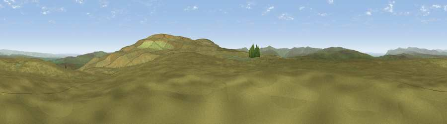

Viewpoint c10113_7824
#13567 in England · top 37% of its area beats it · —The view, rendered

A 360° render of this exact spot computed from the terrain model, tree cover and land cover — summer colours, afternoon light, calibrated against photographs of famous viewpoints. Real trees, hedges and buildings will differ in detail.
The panorama
Grey silhouette: terrain skyline in each direction (720 bearings, Earth curvature and refraction included). Dashed green: skyline with trees (+15 m) and buildings (+8 m) as obstacles. Blue strip: how far the ground is visible on each bearing.
Where the view opens
Wedge length = distance to the farthest visible ground on that bearing (vegetation-aware). Rings at 10, 25 and 50 km.
What fills the view
98% grassland · 1% wetland ·
Angular shares of the visible panorama (visual magnitude), not map area. Landscape diversity 0.06 (0–1 Shannon).
Key numbers
More beautiful places nearby
The staircase of upgrades: each row has a higher view potential than everything closer. Driving times are estimates from straight-line distance, calibrated against real road routing — check an actual route before setting out.
| Place | Direction | Drive | Score |
|---|---|---|---|
| Viewpoint c10119_7823 | N · 0 km | ~1 min | 60.3 |
| Viewpoint c10133_7829 | NNE · 1 km | ~3 min | 66.0 |
| Viewpoint c10092_7857 | ESE · 2 km | ~5 min | 69.5 |
| Viewpoint c10143_7703 | WNW · 6 km | ~13 min | 72.1 |
| Viewpoint c10212_7709 | NW · 8 km | ~16 min | 73.4 |
| Great Shunner Fell | SW · 10 km | ~20 min | 74.4 |
| Viewpoint near Nateby | W · 11 km | ~21 min | 75.0 |
| Viewpoint c10024_7603 | WSW · 12 km | ~22 min | 76.9 |
54.44640, -2.13682 · source: screening · position refined by local search. Computed location — check access rights before visiting.